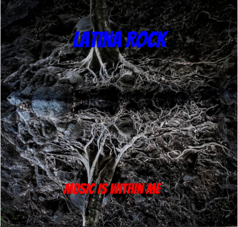

Challenge: Design a Band
Challenge Information
This challenge was made for us to try and use design thinking which is a way of thinking to help us solve complex problems. This process requires DEEP which is short for Discover, Empathy, Experiement and Produce.The discover part is to discover the problem/task. Empathy is the ability to get insight or another point of view of the task. Experiement is to try it out and make a prototype to try to see how it might work. Produce is to show your experiement and recieve feedback. We ued all of these steps to try to make an album cover from random quotes and items from wikipedia. Our challenge also required us to ask other students what they would make the album cover more appealing and they replied with..."legible text, dark background with colors that are not the same but easy to see with the background". We then had to create a background story for it and finally post it on our websites.
Album Cover
Band Biography
Latina rock is a bad of three guys and two girls that have loved music since they were little kids. The three guys were Rick, Jacob and José. They all grew up together ever since they moved into Louisiana in 2003. They were all neighbors that became best friends because they were so similar and they all loved music. They grew up and went to the same schools all their life. In High School the three took a music course and that’s where Jacob and José first encountered their love of their lives. Jack and Jenny were just like them because music was the best thing that has ever happenedto them Music was there life and then Jacob and José decided to write a song with the help of Rick to ask the girls to go out with them. They said yes and thus the first step of becoming a band has occurred. Rick knew that he could play the drums and José can play the guitar. The rest of them can be singing because they had really good voices. The group decided they should make a band because they all loved music more than anything. Jacob asked the group what kind of music would they love to make. Then the group responded in a unison . Rock and Roll. Rick said we need to get our first songs to make an album. José then said we need a band name before we start making our songs. Jack came up with a great name for the band. Latina rock since there friendship was as strong as a rock and they all believed in the Latina Goddess. They all agreed to this. Jenny came up with the quote for the band. Since they were latina rock then there quote would be music is within me saying that music is within them all.
To hear track one of the new album, check out the following link: La bamba